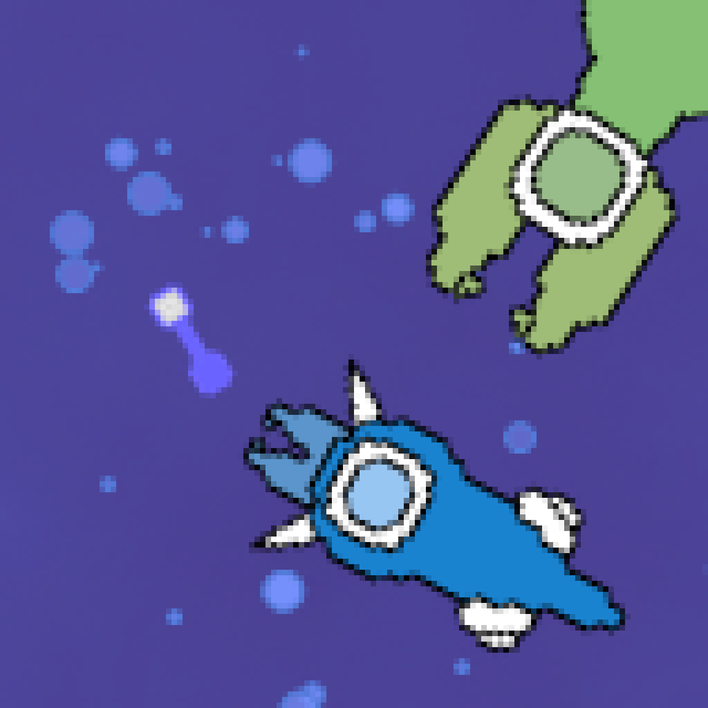

VanillaCold's Site
 |
About Me
Hello there! I'm VanillaCold, also known as Choc in some communities.
|
|
About Me
Hello there! I'm VanillaCold, also known as Choc in some communities.
|
|  |
About Sporigins
Sporigins is a new 2D evolution game that I've been developing. |
About the Mod
This Spore mod adds the ability to beam down onto space-stage planets, allowing for close examination of planets and their ecosystems.
|